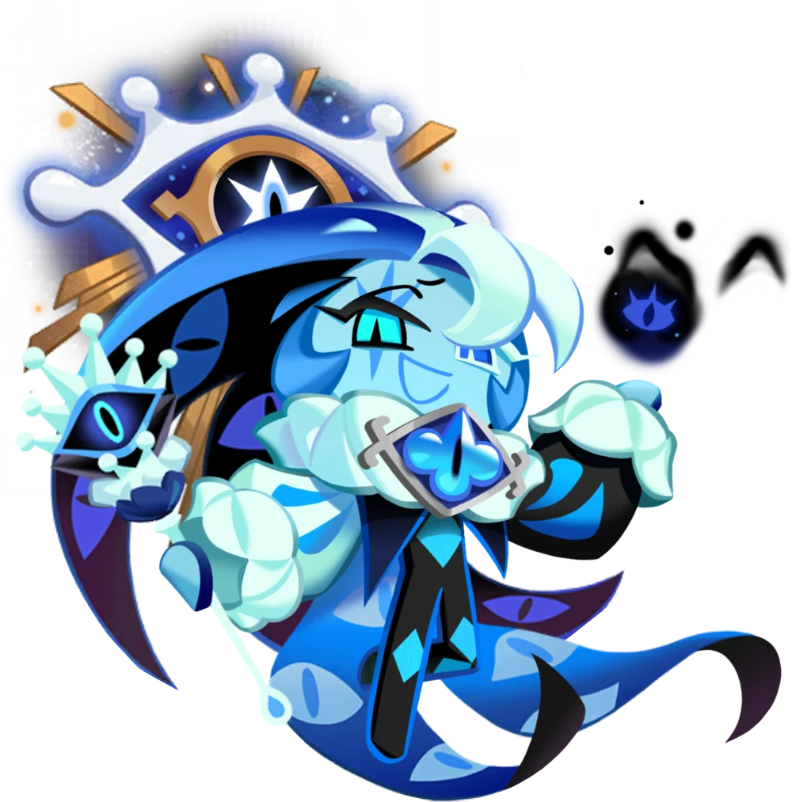
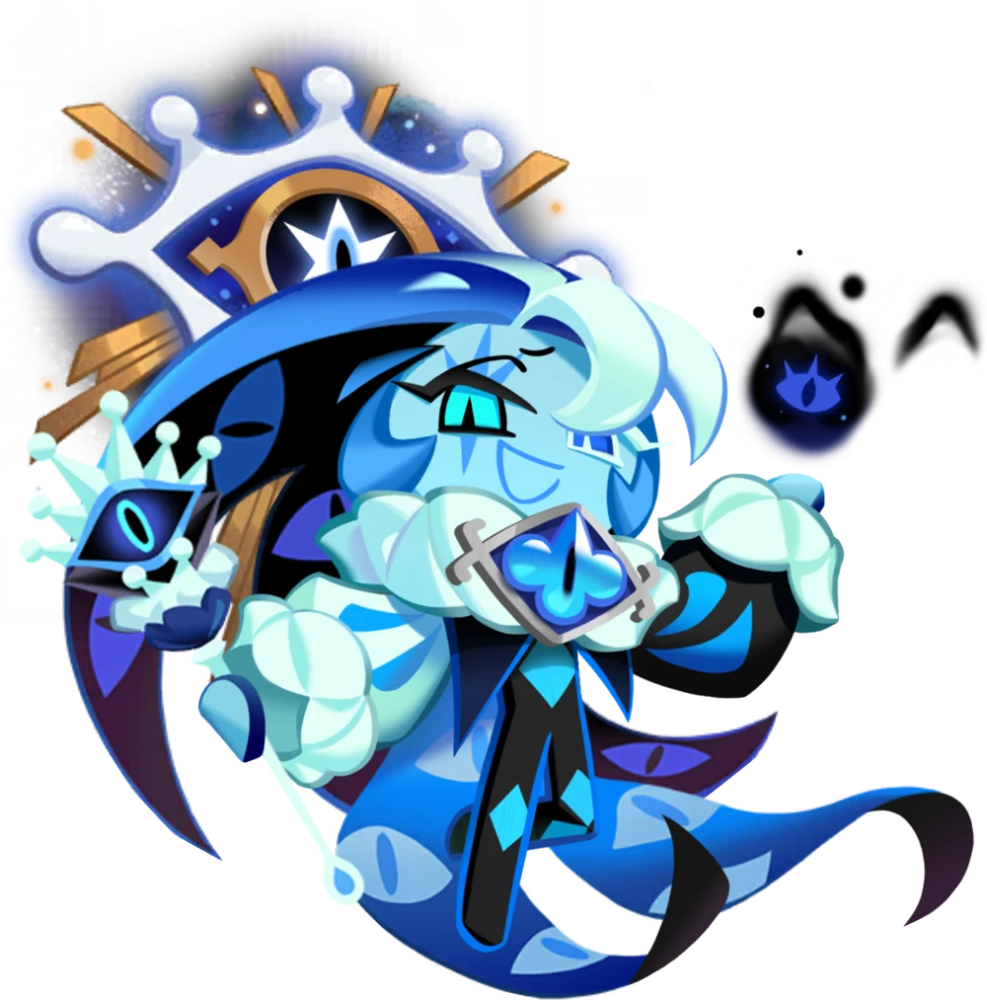

Ahh, welcome, welcome! Why the surprised look? Oh, but we've met before, or have you forgotten? For I am the shadow living in your soul—a lie!" What could have happened to this Cookie, once heralded as the Fount of Knowledge, that made him become the Master of Deceit.(sic) Eons ago, when Earthbread was still young, the radiance of Knowledge was born to bless all that was with meaning. Yet, in the shadow cast by this light, dwelled its twin, Deceit. With time, all those disenchanted with the bitter Truth turned their eyes to the alluring tapestry of lies spun by the silver-tongued trickster. Masterfully juggling truths and falsehoods on the scene of a whimsical shadowplay, Shadow Milk Cookie has perfected his craft of shattering beliefs of the most stoic in a myriad of treacherous reflections. Applause, applause! It is time to raise the curtain, for the show to plunge the world into never-ending chaos is about to begin...